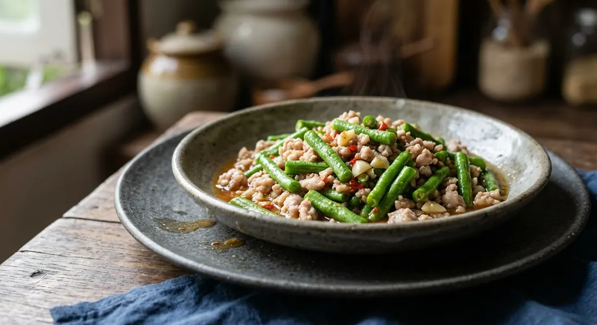

The ten-minute stir-fry every Thai kitchen makes — garlic in sesame oil, minced pork, and beans that must still crunch.

ผัดถั่วฝักยาว is the answer to the cheapest question in a Thai kitchen: what is in the fridge and needs eating. Aroifin frames the dish exactly that way — long beans are the everyday vegetable, the one that turns up in curries, soups and stir-fries. Its ten-minute version is the definitive one: Wongnai's Nickktwf times the whole thing at five minutes prep, five minutes cooking, and the beans go in last, stir-fried only until the colour changes, so they stay crisp — TrueID's egg version makes the same point in its own words: อย่าผัดนาน, don't stir long, the beans must keep their fresh crunch and smell.
The house signature of the classic version is the oil. Wongnai's recipe fries the garlic in sesame oil and is explicit about it: "เมนูนี้ตั้งใจจะให้ได้กลิ่นหอมของน้ำมันงา" — this dish is deliberately built on the aroma of sesame oil. From there it is pork and pantry seasoning: oyster sauce, seasoning sauce, a spoon of sugar, a splash of sweet dark soy for colour.
The other school swaps plain oil for red curry paste. Kapook's version — 968,897 reads — fries a spoon or two of แกงเผ็ด paste until fragrant, adds sliced pork, then the beans, then holy basil and ten shredded kaffir lime leaves. TrueID's 345Pink works the paste harder: fried until แตกมัน, until the oil splits out of it, a splash of water, palm sugar to cut the heat. Both versions crown the plate with a fried egg.
| Thai | English | Amount |
|---|---|---|
| หมูสับ | Minced pork | as liked |
| ถั่วฝักยาวหั่นท่อน | Long beans, cut to bite size | as liked |
| กระเทียมสับ | Garlic, chopped | 3 cloves |
| น้ำมันงา | Sesame oil | 1 tbsp |
| น้ำมันหอย | Oyster sauce | 1 tbsp |
| ซอสปรุงรส | Seasoning sauce | 1 tbsp |
| ผงปรุงรสหมู | Pork seasoning powder | 1 tsp |
| น้ำตาลทราย | Sugar | 1 tsp |
| ซีอิ๊วดำหวาน | Sweet dark soy | a little |
| พริกจินดาแดง | Red jinda chillies | as liked |
The curry-paste version (Kapook): 300 g pork, sliced or minced; 1–2 tbsp red curry paste; long beans; 10 shredded kaffir lime leaves; holy basil if liked; sugar and fish sauce to season. The egg version (TrueID, 345Pink): long beans and 2 eggs, seasoned with 3 tbsp fish sauce, 1 tbsp light soy and ½ tsp MSG — the egg is fried first, the beans folded in until just glossy.
The protein. Minced pork (Wongnai, Aroifin), sliced pork (Kapook, TrueID's curry version), or two eggs and no meat at all (TrueID's egg version).
Curry paste or not. The plain pantry version (Wongnai's sesame-oil build, the egg version) against the red-curry-paste school — Kapook's near-million-read recipe and TrueID's, which fries the paste until the oil splits (แตกมัน) before anything else goes in.
The aromatics. Sesame-oil garlic (Wongnai) versus curry paste plus ten shredded kaffir lime leaves (Kapook, TrueID) versus nothing but beans, egg and seasoning (TrueID's egg version).
The heat. Red jinda chillies into the pan (Wongnai) versus chillies only by way of the curry paste versus none at all (the egg version).
The sweet. A teaspoon of white sugar (Wongnai), palm sugar to cut the paste's heat (TrueID), or sugar simply "to season" (Kapook).
The serve. All the curry-paste sources crown the plate with a fried egg; the plain versions are just rice and beans — and TrueID's egg version pairs with nam phrik from a jar.
This recipe is translated from the following Thai-language sources. Where they disagree, we've said so.
1. Wongnai — Nickktwf, "สูตร ถั่วฝักยาวผัดหมูสับ" (the sesame-oil recipe used here) — wongnai.com
2. Aroifin — thanyachanok, "วิธีทำ ผัดถั่วฝักยาว เมนูอาหารไทย ทำง่าย ๆ อร่อยได้ที่บ้าน" (nutrition and the everyday-vegetable framing) — aroifin.com
3. Kapook — "ผัดพริกแกงหมู ใส่ถั่วฝักยาวรสเข้มข้นหอมสมุนไพร" (the curry-paste version) — cooking.kapook.com
4. TrueID Food — "ถั่วฝักยาวผัดไข่ สูตรผัดแบบกรอบๆ" by 345Pink (the egg version) — food.trueid.net
5. TrueID Food — "แจกสูตรเมนูทำง่าย ผัดพริกแกงหมูถั่วฝักยาว เผ็ด เข้มข้น หอมกลิ่นพริกแกง" by 345Pink (the paste-fried-until-oil-splits version) — food.trueid.net